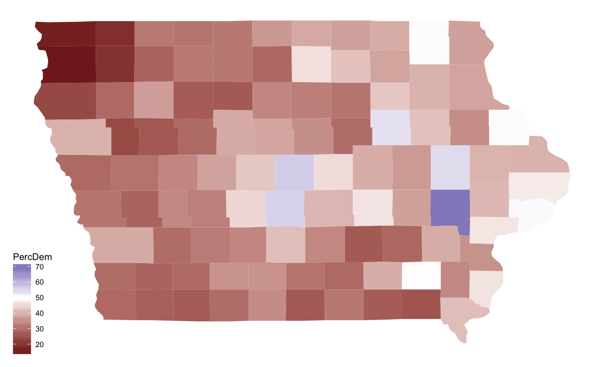

Beyond tables
Sometimes data on the web is not structured as nicely … e.g. let’s assume we want to get a list of all recently active baseball players from Baseball reference

Heike Hofmann
rvest packageread_html gets all the information from a URL
library(rvest)
url <- "http://www.nytimes.com/elections/results/iowa"
html <- read_html(url)
html## {xml_document}
## <html lang="en" itemscope="" xmlns:og="http://opengraphprotocol.org/schema/" itemtype="http://schema.org/NewsArticle">
## [1] <head>\n<title>Iowa Election Results 2016 – The New York Times</titl ...
## [2] <body class="eln-general-state-results eln-state-iowa">\n <div id ...html_table extracts all tables from the sourced html into a list of data frames:
tables <- html %>% html_table(fill=TRUE)
tables %>% purrr::map(glimpse)## Observations: 11
## Variables: 7
## $ Candidate <lgl> NA, NA, NA, NA, NA, NA, NA, NA, NA, NA, NA
## $ Candidate <chr> "Trump\n \n \n Do...
## $ Party <chr> "Republican\n Rep.", "Democrat\n D...
## $ Votes <chr> "800,983", "653,669", "59,186", "19,992", "12,366", ...
## $ Pct. <chr> "51.1%", "41.7%", "3.8%", "1.3%", "0.8%", "0.7%", "0...
## $ <lgl> NA, NA, NA, NA, NA, NA, NA, NA, NA, NA, NA
## $ E.V. <chr> "6", "—", "—", "—", "—", "—", "—", "—", "—", "—", "—"
## Observations: 100
## Variables: 3
## $ Vote by county <chr> "Polk", "Linn", "Scott", "Johnson", "Black Hawk...
## $ Trump <chr> "93,492", "48,390", "39,149", "21,044", "27,476...
## $ Clinton <chr> "119,804", "58,935", "40,440", "50,200", "32,23...
## Observations: 6
## Variables: 6
## $ Candidate <lgl> NA, NA, NA, NA, NA, NA
## $ Candidate <chr> "Grassley*\n \n \n ...
## $ Party <chr> "Republican\n Rep.", "Democrat\n D...
## $ Votes <chr> "923,280", "546,974", "41,609", "17,571", "4,416", "...
## $ Pct. <chr> "60.2%", "35.7%", "2.7%", "1.1%", "0.3%", "1.4%"
## $ <lgl> NA, NA, NA, NA, NA, NA
## Observations: 100
## Variables: 3
## $ Vote by county <chr> "Polk", "Linn", "Scott", "Johnson", "Black Hawk...
## $ Grassley <chr> "118,062", "62,456", "46,331", "28,833", "33,75...
## $ Judge <chr> "100,204", "47,236", "34,375", "42,469", "27,06...
## Observations: 4
## Variables: 5
## $ District
## Dist. <int> 1, 2, 3, 4
## $ Leader <chr> "54%Blum*\n Rep.", "54%Loebsack...
## $ <chr> "46%Vernon\n Dem.", "46%Peters\...
## $ Rpt. <chr> "100%", "99%", "100%", "100%"
## $ <lgl> NA, NA, NA, NA
## Observations: 25
## Variables: 5
## $ Seat
## Seat <int> 2, 4, 6, 8, 10, 12, 14, 16, 18, 20, 22, 24...
## $ Leader <chr> "0%Feenstra*\n Rep.", "61%Guth*\n ...
## $ <chr> "Uncontested", "39%Bangert\n Dem.", ...
## $ Rpt. <chr> "", "100%", "100%", "100%", "100%", "100%...
## $ <lgl> NA, NA, NA, NA, NA, NA, NA, NA, NA, NA, N...
## Observations: 100
## Variables: 5
## $ District
## Dist. <int> 1, 2, 3, 4, 5, 6, 7, 8, 9, 10, 11, 12...
## $ Leader <chr> "0%Wills*\n Rep.", "0%Jones*\n ...
## $ <chr> "Uncontested", "Uncontested", "19%Mc...
## $ Rpt. <chr> "", "", "100%", "100%", "100%", "100...
## $ <lgl> NA, NA, NA, NA, NA, NA, NA, NA, NA, ...
## Observations: 3
## Variables: 5
## $ Question <chr> "Retain Brent Appel", "Retain Daryl Hecht", "Retain M...
## $ Yes <chr> "64%Yes", "64%Yes", "65%Yes"
## $ No <chr> "36%No", "36%No", "35%No"
## $ Rpt. <chr> "100%", "100%", "100%"
## $ <lgl> NA, NA, NA## [[1]]
## Candidate
## 1 NA
## 2 NA
## 3 NA
## 4 NA
## 5 NA
## 6 NA
## 7 NA
## 8 NA
## 9 NA
## 10 NA
## 11 NA
## Candidate
## 1 Trump\n \n \n Donald J. Trump
## 2 Clinton\n \n \n Hillary Clinton
## 3 Johnson\n \n \n Gary Johnson
## 4 Others\n \n \n Others
## 5 McMullin\n \n \n Evan McMullin
## 6 Stein\n \n \n Jill Stein
## 7 Castle\n \n \n Darrell Castle
## 8 Kahn\n \n \n Lynn S. Kahn
## 9 De La Fuente\n \n \n Rocky De La Fuente
## 10 La Riva\n \n \n Gloria La Riva
## 11 Others\n \n \n Others
## Party Votes Pct. E.V.
## 1 Republican\n Rep. 800,983 51.1% NA 6
## 2 Democrat\n Dem. 653,669 41.7% NA —
## 3 Libertarian\n Lib. 59,186 3.8% NA —
## 4 Independent\n Ind. 19,992 1.3% NA —
## 5 Petitioning Candidate 12,366 0.8% NA —
## 6 Green\n Green 11,479 0.7% NA —
## 7 Constitution\n Const. 5,335 0.3% NA —
## 8 Independent\n Ind. 2,247 0.1% NA —
## 9 Petitioning Candidate 451 0.0% NA —
## 10 P.S.L.\n P.S.L. 323 0.0% NA —
## 11 32,201 2.1% NA —
##
## [[2]]
## Vote by county Trump Clinton
## 1 Polk 93,492 119,804
## 2 Linn 48,390 58,935
## 3 Scott 39,149 40,440
## 4 Johnson 21,044 50,200
## 5 Black Hawk 27,476 32,233
## 6 Story 19,458 25,709
## 7 Dubuque 23,460 22,850
## 8 Woodbury 24,727 16,210
## 9 Pottawattamie 24,447 15,355
## 10 Dallas 19,339 15,701
## 11 Warren 14,814 10,411
## 12 Clinton 11,276 10,095
## 13 Cerro Gordo 11,621 9,862
## 14 Muscatine 9,584 8,368
## 15 Des Moines 9,529 8,212
## 16 Jasper 10,560 7,109
## 17 Sioux 14,785 2,300
## 18 Marshall 9,146 7,652
## 19 Marion 10,962 5,482
## 20 Webster 10,056 6,305
## 21 Lee 8,803 6,215
## 22 Wapello 8,715 5,594
## 23 Boone 7,484 5,541
## 24 Benton 8,232 4,678
## 25 Bremer 7,208 5,356
## 26 Plymouth 9,680 2,885
## 27 Winneshiek 5,344 5,254
## 28 Washington 6,173 3,943
## 29 Mahaska 7,432 2,619
## 30 Carroll 6,638 3,309
## 31 Henry 5,779 2,904
## 32 Dickinson 6,753 3,056
## 33 Jackson 5,824 3,837
## 34 Buchanan 5,510 3,970
## 35 Jones 5,720 3,787
## 36 Fayette 5,620 3,689
## 37 Poweshiek 4,946 4,304
## 38 Cedar 5,295 3,599
## 39 Delaware 5,694 2,957
## 40 Clayton 5,317 3,237
## 41 Iowa 5,205 3,084
## 42 Tama 4,971 3,196
## 43 Madison 5,360 2,678
## 44 Clay 5,877 2,249
## 45 Kossuth 5,653 2,543
## 46 Hardin 5,254 2,787
## 47 Buena Vista 4,903 2,856
## 48 Jefferson 3,748 3,710
## 49 Floyd 4,375 3,179
## 50 Mills 5,067 2,090
## 51 Hamilton 4,463 2,726
## 52 Butler 4,921 2,157
## 53 Harrison 4,902 2,131
## 54 O'Brien 5,752 1,315
## 55 Cass 4,761 1,951
## 56 Page 4,893 1,807
## 57 Crawford 4,617 1,991
## 58 Allamakee 4,093 2,421
## 59 Grundy 4,527 1,856
## 60 Chickasaw 3,742 2,266
## 61 Lyon 5,192 920
## 62 Shelby 4,362 1,662
## 63 Cherokee 4,192 1,679
## 64 Appanoose 4,033 1,814
## 65 Wright 3,800 1,896
## 66 Hancock 3,977 1,587
## 67 Union 3,525 1,922
## 68 Winnebago 3,447 1,931
## 69 Guthrie 3,628 1,732
## 70 Mitchell 3,190 1,888
## 71 Sac 3,703 1,270
## 72 Calhoun 3,468 1,398
## 73 Humboldt 3,568 1,252
## 74 Montgomery 3,436 1,314
## 75 Louisa 3,069 1,648
## 76 Keokuk 3,390 1,342
## 77 Franklin 3,163 1,493
## 78 Greene 2,820 1,691
## 79 Emmet 3,124 1,357
## 80 Palo Alto 3,081 1,398
## 81 Monona 3,120 1,247
## 82 Howard 2,611 1,677
## 83 Clarke 2,713 1,465
## 84 Lucas 2,877 1,239
## 85 Worth 2,453 1,530
## 86 Davis 2,723 977
## 87 Monroe 2,638 1,056
## 88 Pocahontas 2,702 963
## 89 Adair 2,461 1,133
## 90 Decatur 2,296 1,201
## 91 Ida 2,655 792
## 92 Fremont 2,407 963
## 93 Van Buren 2,527 845
## 94 Audubon 2,136 1,080
## 95 Osceola 2,531 552
## 96 Taylor 2,111 758
## 97 Wayne 2,069 719
## 98 Ringgold 1,824 753
## 99 Adams 1,395 565
## 100 <NA> <NA> <NA>
##
## [[3]]
## Candidate
## 1 NA
## 2 NA
## 3 NA
## 4 NA
## 5 NA
## 6 NA
## Candidate
## 1 Grassley*\n \n \n Charles E. Grassley*
## 2 Judge\n \n \n Patty Judge
## 3 Aldrich\n \n \n Charles Aldrich
## 4 Hennager\n \n \n Jim Hennager
## 5 Luick-Thrams\n \n \n Michael Luick-Thrams
## 6 Others\n \n \n Others
## Party Votes Pct.
## 1 Republican\n Rep. 923,280 60.2% NA
## 2 Democrat\n Dem. 546,974 35.7% NA
## 3 Libertarian\n Lib. 41,609 2.7% NA
## 4 Independent\n Ind. 17,571 1.1% NA
## 5 Petitioning Candidate 4,416 0.3% NA
## 6 21,987 1.4% NA
##
## [[4]]
## Vote by county Grassley Judge
## 1 Polk 118,062 100,204
## 2 Linn 62,456 47,236
## 3 Scott 46,331 34,375
## 4 Johnson 28,833 42,469
## 5 Black Hawk 33,755 27,061
## 6 Dubuque 27,258 19,229
## 7 Story 25,020 20,934
## 8 Woodbury 27,060 13,817
## 9 Pottawattamie 25,709 12,935
## 10 Dallas 24,314 11,843
## 11 Warren 17,030 8,669
## 12 Clinton 12,795 8,835
## 13 Cerro Gordo 13,371 8,149
## 14 Muscatine 11,108 6,896
## 15 Jasper 11,686 6,169
## 16 Des Moines 10,295 7,558
## 17 Sioux 15,876 1,697
## 18 Marshall 10,410 6,555
## 19 Marion 12,384 4,551
## 20 Webster 11,034 5,388
## 21 Lee 8,402 6,356
## 22 Wapello 8,685 5,362
## 23 Boone 8,564 4,800
## 24 Benton 9,344 3,804
## 25 Bremer 8,572 4,351
## 26 Plymouth 10,317 2,293
## 27 Winneshiek 6,331 4,424
## 28 Washington 7,246 3,058
## 29 Mahaska 7,782 2,291
## 30 Carroll 7,249 2,711
## 31 Dickinson 7,477 2,416
## 32 Buchanan 6,376 3,309
## 33 Jones 6,544 3,058
## 34 Jackson 6,281 3,449
## 35 Fayette 6,379 3,044
## 36 Poweshiek 5,606 3,717
## 37 Cedar 6,077 2,893
## 38 Henry 6,279 2,531
## 39 Delaware 6,439 2,368
## 40 Clayton 5,842 2,778
## 41 Iowa 6,048 2,430
## 42 Tama 5,531 2,768
## 43 Kossuth 6,012 2,233
## 44 Madison 5,891 2,198
## 45 Clay 6,251 1,892
## 46 Hardin 5,812 2,273
## 47 Buena Vista 5,360 2,378
## 48 Floyd 4,945 2,723
## 49 Jefferson 4,084 3,440
## 50 Hamilton 5,128 2,163
## 51 Butler 5,429 1,780
## 52 Mills 5,267 1,735
## 53 O'Brien 6,057 1,060
## 54 Harrison 5,094 1,785
## 55 Cass 5,074 1,552
## 56 Page 5,189 1,456
## 57 Grundy 5,246 1,365
## 58 Allamakee 4,450 2,089
## 59 Crawford 4,663 1,770
## 60 Chickasaw 4,173 1,955
## 61 Lyon 5,322 758
## 62 Cherokee 4,664 1,328
## 63 Shelby 4,456 1,399
## 64 Appanoose 4,120 1,690
## 65 Wright 4,197 1,545
## 66 Hancock 4,223 1,318
## 67 Union 3,908 1,624
## 68 Winnebago 3,924 1,583
## 69 Guthrie 3,978 1,397
## 70 Mitchell 3,668 1,525
## 71 Sac 3,956 1,013
## 72 Calhoun 3,794 1,153
## 73 Humboldt 3,856 999
## 74 Montgomery 3,642 1,065
## 75 Franklin 3,538 1,169
## 76 Louisa 3,290 1,425
## 77 Greene 3,194 1,342
## 78 Emmet 3,338 1,170
## 79 Keokuk 3,507 984
## 80 Palo Alto 3,375 1,106
## 81 Monona 3,310 1,047
## 82 Howard 2,857 1,457
## 83 Clarke 2,897 1,271
## 84 Lucas 3,061 1,066
## 85 Worth 2,762 1,242
## 86 Davis 2,748 970
## 87 Monroe 2,454 1,277
## 88 Pocahontas 2,881 784
## 89 Adair 2,702 890
## 90 Decatur 2,488 1,037
## 91 Ida 2,867 590
## 92 Van Buren 2,614 762
## 93 Fremont 2,574 733
## 94 Audubon 2,321 847
## 95 Osceola 2,598 455
## 96 Taylor 2,217 610
## 97 Wayne 2,195 645
## 98 Ringgold 1,987 616
## 99 Adams 1,514 454
## 100 <NA> <NA> <NA>
##
## [[5]]
## District\n Dist. Leader
## 1 1 54%Blum*\n Rep. 46%Vernon\n Dem.
## 2 2 54%Loebsack*\n Dem. 46%Peters\n Rep.
## 3 3 54%Young*\n Rep. 40%Mowrer\n Dem.
## 4 4 61%King*\n Rep. 39%Weaver\n Dem.
## Rpt.
## 1 100% NA
## 2 99% NA
## 3 100% NA
## 4 100% NA
##
## [[6]]
## Seat\n Seat Leader
## 1 2 0%Feenstra*\n Rep.
## 2 4 61%Guth*\n Rep.
## 3 6 83%Segebart*\n Rep.
## 4 8 54%Dawson\n Rep.
## 5 10 67%Chapman*\n Rep.
## 6 12 78%Costello*\n Rep.
## 7 14 74%Sinclair*\n Rep.
## 8 16 60%Boulton\n Dem.
## 9 18 0%Petersen*\n Dem.
## 10 20 60%Zaun*\n Rep.
## 11 22 56%Schneider*\n Rep.
## 12 24 64%Behn*\n Rep.
## 13 26 62%Brown\n Rep.
## 14 28 58%Breitbach*\n Rep.
## 15 30 59%Danielson*\n Dem.
## 16 32 60%Johnson\n Rep.
## 17 34 56%Mathis*\n Dem.
## 18 36 53%Edler\n Rep.
## 19 38 60%Kapucian*\n Rep.
## 20 40 0%Rozenboom*\n Rep.
## 21 42 50%Taylor*\n Dem.
## 22 44 53%Greene\n Rep.
## 23 46 57%Lofgren\n Rep.
## 24 48 63%Zumbach*\n Rep.
## 25 50 63%Jochum*\n Dem.
## Rpt.
## 1 Uncontested NA
## 2 39%Bangert\n Dem. 100% NA
## 3 17%Serianni\n Lib. 100% NA
## 4 46%Gronstal*\n Dem. 100% NA
## 5 33%Paladino\n Dem. 100% NA
## 6 22%Brantz\n Lib. 100% NA
## 7 26%Smith\n Ind. 100% NA
## 8 35%Pryor\n Rep. 100% NA
## 9 Uncontested NA
## 10 41%Hikiji\n Dem. 100% NA
## 11 44%Barnes\n Dem. 100% NA
## 12 36%Puntenney\n Dem. 98% NA
## 13 38%Wilhelm*\n Dem. 100% NA
## 14 36%Heikes\n Dem. 100% NA
## 15 41%Sadler\n Rep. 100% NA
## 16 40%Schoenjahn*\n Dem. 100% NA
## 17 44%Gadelha\n Rep. 100% NA
## 18 47%Sodders*\n Dem. 100% NA
## 19 34%Mathahs\n Dem. 100% NA
## 20 Uncontested NA
## 21 50%Graber\n Rep. 97% NA
## 22 47%Courtney*\n Dem. 100% NA
## 23 43%Brase*\n Dem. 100% NA
## 24 33%Peterson\n Dem. 100% NA
## 25 37%Hulsizer\n Rep. 96% NA
##
## [[7]]
## District\n Dist. Leader
## 1 1 0%Wills*\n Rep.
## 2 2 0%Jones*\n Rep.
## 3 3 81%Huseman*\n Rep.
## 4 4 63%Wheeler\n Rep.
## 5 5 77%Holz*\n Rep.
## 6 6 66%Carlin\n Rep.
## 7 7 63%Gassman*\n Rep.
## 8 8 68%Baxter*\n Rep.
## 9 9 57%Miller*\n Dem.
## 10 10 0%Sexton*\n Rep.
## 11 11 65%Worthan*\n Rep.
## 12 12 70%Best*\n Rep.
## 13 13 62%Hall*\n Dem.
## 14 14 51%Kacena\n Dem.
## 15 15 52%McConkey*\n Dem.
## 16 16 57%Hanusa*\n Rep.
## 17 17 74%Windschitl*\n Rep.
## 18 18 0%Holt*\n Rep.
## 19 19 61%Watts*\n Rep.
## 20 20 53%Baudler*\n Rep.
## 21 21 0%Moore*\n Rep.
## 22 22 0%Forristall*\n Rep.
## 23 23 71%Sieck*\n Rep.
## 24 24 0%Dolecheck*\n Rep.
## 25 25 66%Gustafson*\n Rep.
## 26 26 54%Ourth*\n Dem.
## 27 27 71%Fry*\n Rep.
## 28 28 65%Heartsill*\n Rep.
## 29 29 51%Breckenridge\n Dem.
## 30 30 62%Nunn*\n Rep.
## 31 31 55%Olson*\n Dem.
## 32 32 68%Gaines*\n Dem.
## 33 33 77%Meyer*\n Dem.
## 34 34 0%Hunter*\n Dem.
## 35 35 76%Abdul-Samad*\n Dem.
## 36 36 64%Anderson*\n Dem.
## 37 37 57%Landon*\n Rep.
## 38 38 52%Koester*\n Rep.
## 39 39 57%Highfill*\n Rep.
## 40 40 57%Forbes*\n Dem.
## 41 41 0%Oldson*\n Dem.
## 42 42 53%Cownie*\n Rep.
## 43 43 52%Hagenow*\n Rep.
## 44 44 0%Taylor*\n Rep.
## 45 45 56%Wessel-Kroeschell*\n Dem.
## 46 46 0%Heddens*\n Dem.
## 47 47 61%Baltimore*\n Rep.
## 48 48 65%Bacon*\n Rep.
## 49 49 60%Deyoe*\n Rep.
## 50 50 75%Grassley*\n Rep.
## 51 51 63%Bloomingdale\n Rep.
## 52 52 54%Prichard*\n Dem.
## 53 53 61%Steckman*\n Dem.
## 54 54 0%Upmeyer*\n Rep.
## 55 55 57%Bergan\n Rep.
## 56 56 67%Hager\n Rep.
## 57 57 52%Lundgren\n Rep.
## 58 58 59%McKean\n Rep.
## 59 59 54%Kressig*\n Dem.
## 60 60 58%Rogers*\n Rep.
## 61 61 0%Brown-Powers*\n Dem.
## 62 62 63%Smith\n Dem.
## 63 63 60%Salmon*\n Rep.
## 64 64 58%Bearinger*\n Dem.
## 65 65 67%Bennett*\n Dem.
## 66 66 0%Staed*\n Dem.
## 67 67 63%Hinson\n Rep.
## 68 68 54%Rizer*\n Rep.
## 69 69 0%Running-Marquardt*\n Dem.
## 70 70 57%Taylor*\n Dem.
## 71 71 0%Smith*\n Dem.
## 72 72 62%Fisher*\n Rep.
## 73 73 0%Kaufmann*\n Rep.
## 74 74 0%Jacoby*\n Dem.
## 75 75 68%Pettengill*\n Rep.
## 76 76 62%Maxwell*\n Rep.
## 77 77 58%Nielsen\n Dem.
## 78 78 78%Klein*\n Rep.
## 79 79 0%Vander Linden*\n Rep.
## 80 80 61%Sheets*\n Rep.
## 81 81 0%Gaskill*\n Dem.
## 82 82 0%Hanson*\n Dem.
## 83 83 0%Kearns*\n Dem.
## 84 84 70%Heaton*\n Rep.
## 85 85 0%Lensing*\n Dem.
## 86 86 0%Mascher*\n Dem.
## 87 87 0%Cohoon*\n Dem.
## 88 88 61%Kerr\n Rep.
## 89 89 0%Lykam*\n Dem.
## 90 90 0%Winckler*\n Dem.
## 91 91 54%Carlson*\n Rep.
## 92 92 56%Paustian*\n Rep.
## 93 93 52%Thede*\n Dem.
## 94 94 0%Mohr\n Rep.
## 95 95 58%Zumbach\n Rep.
## 96 96 65%Hein*\n Rep.
## 97 97 56%Mommsen*\n Rep.
## 98 98 67%Wolfe*\n Dem.
## 99 99 0%Finkenauer*\n Dem.
## 100 100 0%Isenhart*\n Dem.
## Rpt.
## 1 Uncontested NA
## 2 Uncontested NA
## 3 19%McCoy\n Dem. 100% NA
## 4 37%VanDerWerff 100% NA
## 5 23%Ritz\n Dem. 100% NA
## 6 35%Alarcon-Flory\n Dem. 100% NA
## 7 37%Grussing\n Dem. 100% NA
## 8 32%Paule Huisinga\n Dem. 100% NA
## 9 43%Waechter\n Rep. 100% NA
## 10 Uncontested NA
## 11 35%Huddleston\n Dem. 100% NA
## 12 30%Myers\n Dem. 100% NA
## 13 39%Broyhill\n Rep. 100% NA
## 14 49%Henderson\n Rep. 100% NA
## 15 48%Riley\n Rep. 100% NA
## 16 43%Gorman\n Dem. 100% NA
## 17 27%Creasman\n Dem. 100% NA
## 18 Uncontested NA
## 19 39%Smith\n Dem. 100% NA
## 20 29%Heldt\n Dem. 100% NA
## 21 Uncontested NA
## 22 Uncontested NA
## 23 29%Florian\n Dem. 100% NA
## 24 Uncontested NA
## 25 34%Knight\n Dem. 100% NA
## 26 46%Snodgrass\n Rep. 100% NA
## 27 29%Higdon\n Dem. 100% NA
## 28 35%Duffy\n Dem. 100% NA
## 29 38%Payton\n Rep. 100% NA
## 30 38%Riding\n Dem. 100% NA
## 31 39%Christoffersen\n Rep. 100% NA
## 32 28%Charlier\n Rep. 100% NA
## 33 23%Tomlinson\n Lib. 100% NA
## 34 Uncontested NA
## 35 24%Fry\n Lib. 100% NA
## 36 36%Miller\n Rep. 100% NA
## 37 43%Phillips\n Dem. 100% NA
## 38 43%Matson\n Dem. 100% NA
## 39 43%Morris\n Dem. 100% NA
## 40 43%Reed\n Rep. 100% NA
## 41 Uncontested NA
## 42 47%Celsi\n Dem. 100% NA
## 43 48%Konfrst\n Dem. 100% NA
## 44 Uncontested NA
## 45 36%Childs-Smith\n Rep. 100% NA
## 46 Uncontested NA
## 47 40%Duncan\n Dem. 100% NA
## 48 35%Taha\n Dem. 96% NA
## 49 28%Franklin\n Dem. 100% NA
## 50 25%Fritz\n Dem. 100% NA
## 51 38%Hejhal\n Dem. 100% NA
## 52 46%Stokes\n Rep. 100% NA
## 53 40%Hovland\n Rep. 100% NA
## 54 Uncontested NA
## 55 43%Ritter\n Dem. 100% NA
## 56 33%Ruff*\n Dem. 100% NA
## 57 48%Stecher\n Dem. 100% NA
## 58 41%Kean\n Dem. 100% NA
## 59 31%Speer\n Rep. 100% NA
## 60 42%Kroeger\n Dem. 100% NA
## 61 Uncontested NA
## 62 30%Obadal\n Rep. 100% NA
## 63 40%Meyer\n Dem. 100% NA
## 64 42%Schulz\n Rep. 100% NA
## 65 34%Foster\n Rep. 100% NA
## 66 Uncontested NA
## 67 37%Seidl\n Dem. 100% NA
## 68 46%Donahue\n Dem. 100% NA
## 69 Uncontested NA
## 70 37%Van Fleet\n Rep. 100% NA
## 71 Uncontested NA
## 72 38%Wrage\n Dem. 100% NA
## 73 Uncontested NA
## 74 Uncontested NA
## 75 32%Denison\n Dem. 100% NA
## 76 38%Tornholm\n Dem. 100% NA
## 77 42%Phillips\n Rep. 100% NA
## 78 22%Miller\n Lib. 100% NA
## 79 Uncontested NA
## 80 36%Grenko\n Dem. 100% NA
## 81 Uncontested NA
## 82 Uncontested NA
## 83 Uncontested NA
## 84 31%Duncan\n Dem. 95% NA
## 85 Uncontested NA
## 86 Uncontested NA
## 87 Uncontested NA
## 88 39%Drew\n Dem. 100% NA
## 89 Uncontested NA
## 90 Uncontested NA
## 91 46%Wiese\n Dem. 100% NA
## 92 44%Krumwiede\n Dem. 100% NA
## 93 48%Whalen\n Rep. 100% NA
## 94 Uncontested NA
## 95 42%Whitehead\n Dem. 100% NA
## 96 35%Hanlon\n Dem. 100% NA
## 97 37%Wolf\n Dem. 100% NA
## 98 34%Eldrenkamp\n Rep. 100% NA
## 99 Uncontested NA
## 100 Uncontested NA
##
## [[8]]
## Question Yes No Rpt.
## 1 Retain Brent Appel 64%Yes 36%No 100% NA
## 2 Retain Daryl Hecht 64%Yes 36%No 100% NA
## 3 Retain Mark Cady 65%Yes 35%No 100% NAMost tables need a bit of clean-up:
ia_results <- tables[[2]] %>% mutate(
Trump = parse_number(Trump),
Clinton = parse_number(Clinton)
)
ia_results## Vote by county Trump Clinton
## 1 Polk 93492 119804
## 2 Linn 48390 58935
## 3 Scott 39149 40440
## 4 Johnson 21044 50200
## 5 Black Hawk 27476 32233
## 6 Story 19458 25709
## 7 Dubuque 23460 22850
## 8 Woodbury 24727 16210
## 9 Pottawattamie 24447 15355
## 10 Dallas 19339 15701
## 11 Warren 14814 10411
## 12 Clinton 11276 10095
## 13 Cerro Gordo 11621 9862
## 14 Muscatine 9584 8368
## 15 Des Moines 9529 8212
## 16 Jasper 10560 7109
## 17 Sioux 14785 2300
## 18 Marshall 9146 7652
## 19 Marion 10962 5482
## 20 Webster 10056 6305
## 21 Lee 8803 6215
## 22 Wapello 8715 5594
## 23 Boone 7484 5541
## 24 Benton 8232 4678
## 25 Bremer 7208 5356
## 26 Plymouth 9680 2885
## 27 Winneshiek 5344 5254
## 28 Washington 6173 3943
## 29 Mahaska 7432 2619
## 30 Carroll 6638 3309
## 31 Henry 5779 2904
## 32 Dickinson 6753 3056
## 33 Jackson 5824 3837
## 34 Buchanan 5510 3970
## 35 Jones 5720 3787
## 36 Fayette 5620 3689
## 37 Poweshiek 4946 4304
## 38 Cedar 5295 3599
## 39 Delaware 5694 2957
## 40 Clayton 5317 3237
## 41 Iowa 5205 3084
## 42 Tama 4971 3196
## 43 Madison 5360 2678
## 44 Clay 5877 2249
## 45 Kossuth 5653 2543
## 46 Hardin 5254 2787
## 47 Buena Vista 4903 2856
## 48 Jefferson 3748 3710
## 49 Floyd 4375 3179
## 50 Mills 5067 2090
## 51 Hamilton 4463 2726
## 52 Butler 4921 2157
## 53 Harrison 4902 2131
## 54 O'Brien 5752 1315
## 55 Cass 4761 1951
## 56 Page 4893 1807
## 57 Crawford 4617 1991
## 58 Allamakee 4093 2421
## 59 Grundy 4527 1856
## 60 Chickasaw 3742 2266
## 61 Lyon 5192 920
## 62 Shelby 4362 1662
## 63 Cherokee 4192 1679
## 64 Appanoose 4033 1814
## 65 Wright 3800 1896
## 66 Hancock 3977 1587
## 67 Union 3525 1922
## 68 Winnebago 3447 1931
## 69 Guthrie 3628 1732
## 70 Mitchell 3190 1888
## 71 Sac 3703 1270
## 72 Calhoun 3468 1398
## 73 Humboldt 3568 1252
## 74 Montgomery 3436 1314
## 75 Louisa 3069 1648
## 76 Keokuk 3390 1342
## 77 Franklin 3163 1493
## 78 Greene 2820 1691
## 79 Emmet 3124 1357
## 80 Palo Alto 3081 1398
## 81 Monona 3120 1247
## 82 Howard 2611 1677
## 83 Clarke 2713 1465
## 84 Lucas 2877 1239
## 85 Worth 2453 1530
## 86 Davis 2723 977
## 87 Monroe 2638 1056
## 88 Pocahontas 2702 963
## 89 Adair 2461 1133
## 90 Decatur 2296 1201
## 91 Ida 2655 792
## 92 Fremont 2407 963
## 93 Van Buren 2527 845
## 94 Audubon 2136 1080
## 95 Osceola 2531 552
## 96 Taylor 2111 758
## 97 Wayne 2069 719
## 98 Ringgold 1824 753
## 99 Adams 1395 565
## 100 <NA> NA NAConnect to the website of the NY Times election results at http://www.nytimes.com/elections/results/
rvest to download the election results for the 2016 Presidential Election for all counties of your state.Can you get the data you just scraped onto a map of the counties? - Try to map the percentage you calculated to the fill-color of the counties’ polygons.
You will need to join the percentages with the county polygons:
counties <- map_data("county")
head(counties)## long lat group order region subregion
## 1 -86.50517 32.34920 1 1 alabama autauga
## 2 -86.53382 32.35493 1 2 alabama autauga
## 3 -86.54527 32.36639 1 3 alabama autauga
## 4 -86.55673 32.37785 1 4 alabama autauga
## 5 -86.57966 32.38357 1 5 alabama autauga
## 6 -86.59111 32.37785 1 6 alabama autaugaia_results <- ia_results %>% mutate(
PercDem = Clinton/(Trump + Clinton)*100,
subregion = tolower(`Vote by county`)
)
anti_join(ia_results, counties %>% filter(region=="iowa"), by="subregion")## Vote by county Trump Clinton PercDem subregion
## 1 <NA> NA NA NA <NA>
## 2 O'Brien 5752 1315 18.60761 o'brienanti_join(counties %>% filter(region=="iowa"), ia_results, by="subregion")## long lat group order region subregion
## 1 -95.86156 43.26404 825 26075 iowa obrien
## 2 -95.39174 43.26404 825 26076 iowa obrien
## 3 -95.39747 42.91454 825 26077 iowa obrien
## 4 -95.85583 42.90881 825 26078 iowa obrien
## 5 -95.86156 43.26404 825 26079 iowa obrienia_results <- ia_results %>% mutate(
subregion = replace(subregion, subregion=="o'brien", "obrien")
)
ia_full <- left_join(ia_results,
counties %>% filter(region=="iowa"),
by="subregion")ia_full %>%
ggplot(aes( x = long, y = lat, group = subregion)) +
geom_polygon(aes(fill = PercDem)) +
scale_fill_gradient2(midpoint=50, mid = "white") +
ggthemes::theme_map()
Sometimes data on the web is not structured as nicely … e.g. let’s assume we want to get a list of all recently active baseball players from Baseball reference
vignette("selectorgadget")url <- "http://www.baseball-reference.com/players/a/"
html <- read_html(url)
html %>% html_nodes("b a") %>% html_text()## [1] "David Aardsma" "Fernando Abad" "Jose Abreu"
## [4] "Winston Abreu" "Alfredo Aceves" "A.J. Achter"
## [7] "Dustin Ackley" "Manny Acosta" "Cristhian Adames"
## [10] "Austin Adams" "David Adams" "Lane Adams"
## [13] "Matt Adams" "Tim Adleman" "Ehire Adrianza"
## [16] "Jesus Aguilar" "Nick Ahmed" "Jonathan Albaladejo"
## [19] "Andrew Albers" "Matt Albers" "Hanser Alberto"
## [22] "Al Alburquerque" "Arismendy Alcantara" "Raul Alcantara"
## [25] "Scott Alexander" "Jorge Alfaro" "Eliezer Alfonzo"
## [28] "Brandon Allen" "Cody Allen" "Abraham Almonte"
## [31] "Miguel Almonte" "Zoilo Almonte" "Albert Almora"
## [34] "Yonder Alonso" "Dan Altavilla" "Aaron Altherr"
## [37] "Jose Altuve" "Dariel Alvarez" "Dario Alvarez"
## [40] "Henderson Alvarez" "Jose Alvarez" "Pedro Alvarez"
## [43] "R.J. Alvarez" "Alexi Amarista" "Hector Ambriz"
## [46] "Alfredo Amezaga" "Brett Anderson" "Bryan Anderson"
## [49] "Chase Anderson" "Cody Anderson" "Lars Anderson"
## [52] "Tim Anderson" "Tyler Anderson" "Robert Andino"
## [55] "Matt Andriese" "Elvis Andrus" "Dean Anna"
## [58] "Dustin Antolin" "Nori Aoki" "Jayson Aquino"
## [61] "Elvis Araujo" "Chris Archer" "Orlando Arcia"
## [64] "Oswaldo Arcia" "Nolan Arenado" "J.P. Arencibia"
## [67] "Shawn Armstrong" "Jonathan Aro" "Jake Arrieta"
## [70] "Bronson Arroyo" "Erisbel Arruebarrena" "Cody Asche"
## [73] "Alec Asher" "Nevin Ashley" "Carlos Asuaje"
## [76] "Mitch Atkins" "Tyler Austin" "Xavier Avery"
## [79] "Alex Avila" "Luis Avilan" "Mike Aviles"
## [82] "Dylan Axelrod" "John Axford" "Luis Ayala"
## [85] "Erick Aybar"We are, in fact, not just interested in the names of the players, but also in the links to each player’s website
html_attr let’s us access an attribute of an html nodehtml_attrs extracts all attributes of an html nodehtml %>% html_nodes("b a") %>% html_attr(name="href")## [1] "/players/a/aardsda01.shtml" "/players/a/abadfe01.shtml"
## [3] "/players/a/abreujo02.shtml" "/players/a/abreuwi01.shtml"
## [5] "/players/a/aceveal01.shtml" "/players/a/achteaj01.shtml"
## [7] "/players/a/ackledu01.shtml" "/players/a/acostma01.shtml"
## [9] "/players/a/adamecr01.shtml" "/players/a/adamsau01.shtml"
## [11] "/players/a/adamsda02.shtml" "/players/a/adamsla01.shtml"
## [13] "/players/a/adamsma01.shtml" "/players/a/adlemti01.shtml"
## [15] "/players/a/adriaeh01.shtml" "/players/a/aguilje01.shtml"
## [17] "/players/a/ahmedni01.shtml" "/players/a/albaljo01.shtml"
## [19] "/players/a/alberan01.shtml" "/players/a/alberma01.shtml"
## [21] "/players/a/alberha01.shtml" "/players/a/albural01.shtml"
## [23] "/players/a/alcanar01.shtml" "/players/a/alcanra01.shtml"
## [25] "/players/a/alexasc02.shtml" "/players/a/alfarjo01.shtml"
## [27] "/players/a/alfonel01.shtml" "/players/a/allenbr01.shtml"
## [29] "/players/a/allenco01.shtml" "/players/a/almonab01.shtml"
## [31] "/players/a/almonmi01.shtml" "/players/a/almonzo01.shtml"
## [33] "/players/a/almoral01.shtml" "/players/a/alonsyo01.shtml"
## [35] "/players/a/altavda01.shtml" "/players/a/altheaa01.shtml"
## [37] "/players/a/altuvjo01.shtml" "/players/a/alvarda02.shtml"
## [39] "/players/a/alvarda01.shtml" "/players/a/alvarhe01.shtml"
## [41] "/players/a/alvarjo02.shtml" "/players/a/alvarpe01.shtml"
## [43] "/players/a/alvarrj01.shtml" "/players/a/amarial01.shtml"
## [45] "/players/a/ambrihe01.shtml" "/players/a/amezaal01.shtml"
## [47] "/players/a/anderbr04.shtml" "/players/a/anderbr05.shtml"
## [49] "/players/a/anderch01.shtml" "/players/a/anderco01.shtml"
## [51] "/players/a/anderla03.shtml" "/players/a/anderti01.shtml"
## [53] "/players/a/anderty01.shtml" "/players/a/andinro01.shtml"
## [55] "/players/a/andrima01.shtml" "/players/a/andruel01.shtml"
## [57] "/players/a/annade01.shtml" "/players/a/antoldu01.shtml"
## [59] "/players/a/aokino01.shtml" "/players/a/aquinja01.shtml"
## [61] "/players/a/araujel01.shtml" "/players/a/archech01.shtml"
## [63] "/players/a/arciaor01.shtml" "/players/a/arciaos01.shtml"
## [65] "/players/a/arenano01.shtml" "/players/a/arencjp01.shtml"
## [67] "/players/a/armstsh01.shtml" "/players/a/arojo01.shtml"
## [69] "/players/a/arrieja01.shtml" "/players/a/arroybr01.shtml"
## [71] "/players/a/arrueba01.shtml" "/players/a/ascheco01.shtml"
## [73] "/players/a/asheral01.shtml" "/players/a/ashlene01.shtml"
## [75] "/players/a/asuajca01.shtml" "/players/a/atkinmi01.shtml"
## [77] "/players/a/austity01.shtml" "/players/a/averyxa01.shtml"
## [79] "/players/a/avilaal01.shtml" "/players/a/avilalu01.shtml"
## [81] "/players/a/avilemi01.shtml" "/players/a/axelrdy01.shtml"
## [83] "/players/a/axforjo01.shtml" "/players/a/ayalalu01.shtml"
## [85] "/players/a/aybarer01.shtml"Use the SelectorGadget on the website for David Aardsma
Find the css description to extract his career statistics and load them into your R session.
Does the same code work to extract career statistics for (some of) the other players?
What other information do we need to know? - and how can we get to that?
url <- "http://www.baseball-reference.com/players/a/aardsda01.shtml"
html <- read_html(url)
html %>% html_nodes(".stats_pullout .poptip") %>% html_text()## [1] "WAR" "W" "L" "ERA" "G" "GS" "SV" "IP" "SO" "WHIP"html %>% html_nodes(".stats_pullout .p1 p, .stats_pullout .p2 p, .stats_pullout .p3 p") %>% html_text()## [1] "1.9" "16" "18" "4.27" "331" "0" "69" "337.0"
## [9] "340" "1.421"Now apply to other players (with ‘a’ as starting letter) - first we get everything tidied up in a dataset
url <- "http://www.baseball-reference.com/players/a/"
html <- read_html(url)
players <- html %>% html_nodes("b a") %>% html_text()
links <- html %>% html_nodes("b a") %>% html_attr(name="href")
bb <- data.frame(players=players, links = links)second, we follow the links to get to career statistics:
getStats <- function(link) {
s <- html_session("http://www.baseball-reference.com")
s <- s %>% jump_to(link)
html <- read_html(s)
type <- html %>% html_nodes(".stats_pullout .poptip") %>% html_text()
values <- html %>% html_nodes(".stats_pullout .p1 p, .stats_pullout .p2 p, .stats_pullout .p3 p") %>% html_text()
what <- html %>% html_nodes(".stats_pullout strong") %>% html_text()
df <- data.frame(type=rep(type, each=length(what)), values=values, what = rep(what, length(values)))
df
}
bbhead <- bb[1:5,] %>% mutate(
career = links %>% purrr::map(getStats)
)
bbhead[,c("players", "career")]## players
## 1 David Aardsma
## 2 Fernando Abad
## 3 Jose Abreu
## 4 Winston Abreu
## 5 Alfredo Aceves
## career
## 1 9, 8, 5, 1, 2, 3, 7, 4, 6, 10, 13, 14, 15, 19, 16, 11, 20, 17, 18, 12, 21, 21, 21, 21, 21, 21, 21, 21, 21, 21
## 2 9, 9, 8, 8, 5, 5, 1, 1, 2, 2, 3, 3, 7, 7, 4, 4, 6, 6, 10, 10, 9, 9, 8, 8, 5, 5, 1, 1, 2, 2, 3, 3, 7, 7, 4, 4, 6, 6, 10, 10, 16, 12, 26, 13, 18, 26, 21, 20, 22, 25, 26, 11, 13, 13, 19, 24, 17, 23, 14, 15, 16, 12, 26, 13, 18, 26, 21, 20, 22, 25, 26, 11, 13, 13, 19, 24, 17, 23, 14, 15, 28, 27, 28, 27, 28, 27, 28, 27, 28, 27, 28, 27, 28, 27, 28, 27, 28, 27, 28, 27, 28, 27, 28, 27, 28, 27, 28, 27, 28, 27, 28, 27, 28, 27, 28, 27, 28, 27, 28, 27
## 3 12, 12, 1, 1, 3, 3, 4, 4, 8, 8, 9, 9, 10, 10, 2, 2, 5, 5, 11, 11, 6, 6, 7, 7, 12, 12, 1, 1, 3, 3, 4, 4, 8, 8, 9, 9, 10, 10, 2, 2, 5, 5, 11, 11, 6, 6, 7, 7, 23, 28, 26, 34, 33, 27, 36, 30, 29, 35, 32, 22, 31, 21, 14, 13, 16, 15, 18, 17, 20, 19, 25, 24, 23, 28, 26, 34, 33, 27, 36, 30, 29, 35, 32, 22, 31, 21, 14, 13, 16, 15, 18, 17, 20, 19, 25, 24, 38, 37, 38, 37, 38, 37, 38, 37, 38, 37, 38, 37, 38, 37, 38, 37, 38, 37, 38, 37, 38, 37, 38, 37, 38, 37, 38, 37, 38, 37, 38, 37, 38, 37, 38, 37, 38, 37, 38, 37, 38, 37, 38, 37, 38, 37, 38, 37
## 4 9, 8, 5, 1, 2, 3, 7, 4, 6, 10, 11, 12, 13, 17, 15, 12, 12, 16, 15, 14, 18, 18, 18, 18, 18, 18, 18, 18, 18, 18
## 5 9, 8, 5, 1, 2, 3, 7, 4, 6, 10, 20, 18, 13, 17, 14, 12, 16, 19, 15, 11, 21, 21, 21, 21, 21, 21, 21, 21, 21, 21We also need to know the position a player has …
This information has the css path “#meta p:nth-child(2)”